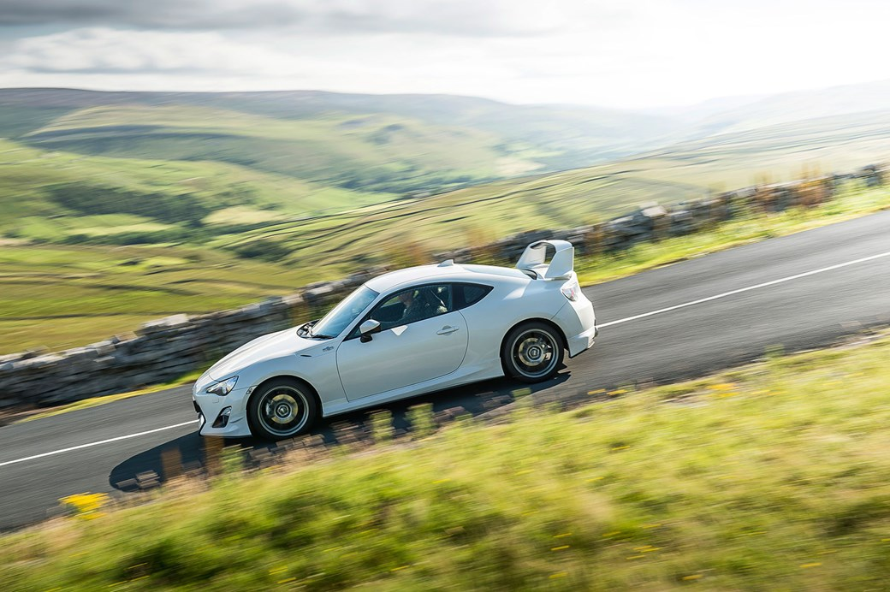
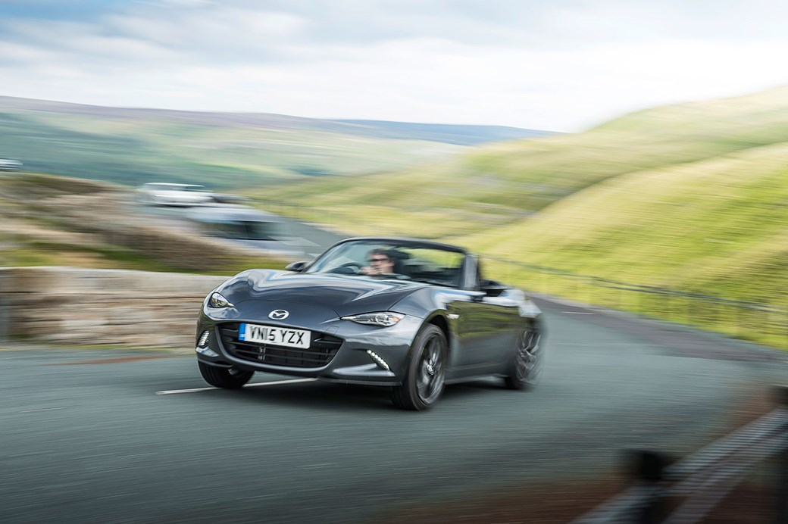
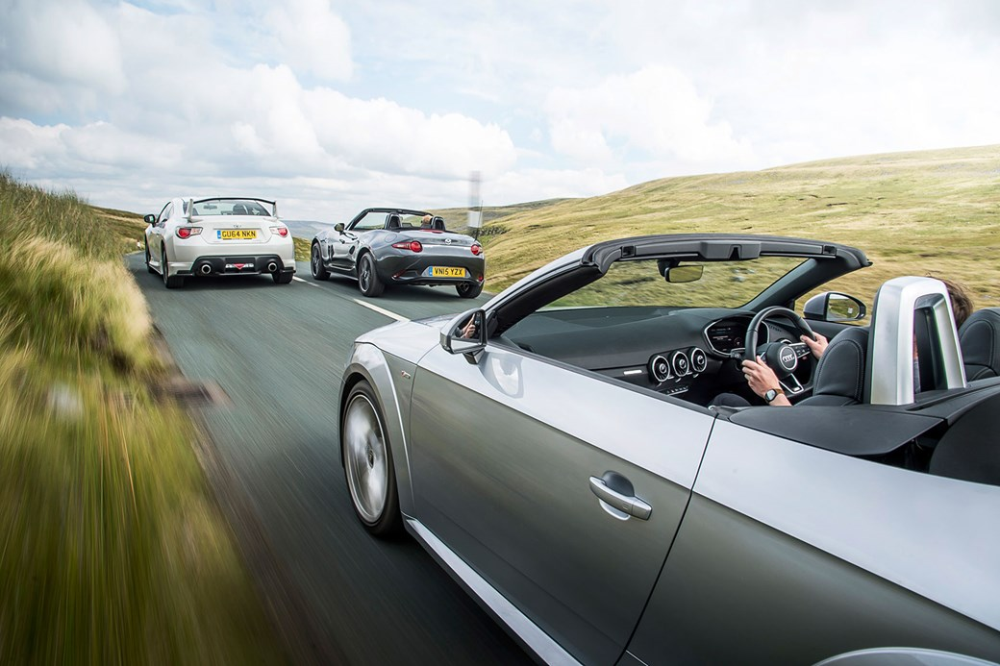
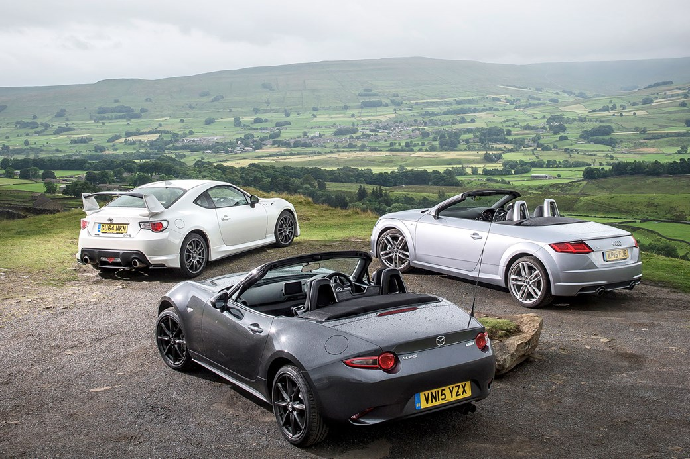
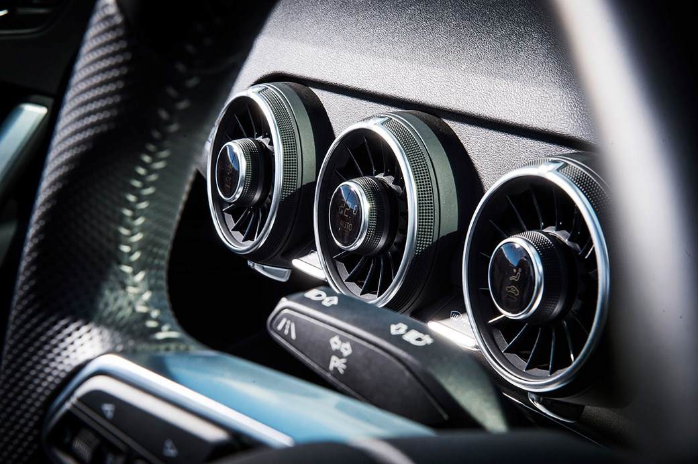
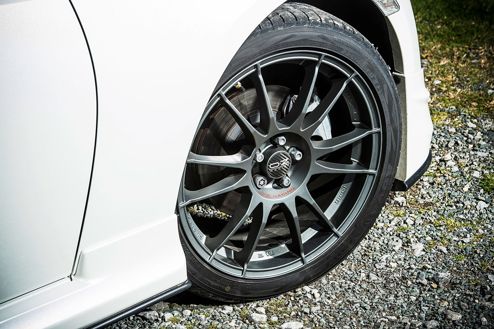
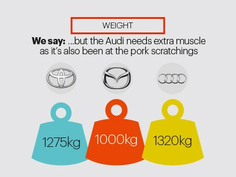

CARS
Its all about cars we give you the best news about the most latest cars. We
do reviews about different cars and then give you all the informaton and best riviews
giving you the buyer with the best option to take there in the market.
After a quarter of a century and – here, now – four generations, the Mazda MX-5 has been judged everything from the saviour of the affordable everyday sports car to cliched hairdresser’s chariot of choice (saves on the blow-drying costs), middle-age crisis mobile and, increasingly, budget drift hack. That’s quite the quagmire of baggage for this brand new version to negotiate.
But if Mazda had any doubts or second thoughts about what it wanted to achieve with the Mk4, it doesn’t show. Perhaps in reaction to accusations of stodge surrounding the third-generation car but certainly as champion of its current ‘Skyactiv’ engine philosophy, which takes a holistic engineering approach to efficiency, the new MX-5 is pared back to such an extent that it doesn’t just look fighting fit but aggressively hungry. There is nothing superfluous about the exterior design – overhangs are almost unbelievably short given modern crash regulation; razor creases, and the way the surfacing hugs the structure scream ultra-low BMI. It also carries over very little design language, looking more like an updated Honda S2000 that’s been bred with DNA from BMW than any previous MX-5. Whatever, it is quite the sexy beast, and more importantly clearly signals Mazda’s return to first principles: low weight and little frippery, in pursuit of a pure, involving driving experience.
Appearances are in no way deceptive in this regard. The classic front-engine, rear-wheel-drive, open-top formula continues, but the packaging is such that it’s shorter than the tiny original – and though wider and equipped with modern safety kit, it’s almost as light, too. This bigger-hearted 2.0-litre model is quoted at 1075kg, with driver. That’s staggering, especially considering the conventional materials. Less mass to change direction and lug around means improved dynamic behaviour and efficiency without resort to the added complexity of turbochargers. Consider also the proper fabric folding roof that you can raise or lower in – literally – three seconds, and there’s nothing else like it. Especially for the cost, which starts at just £5 more than the old car at the entry level and maxes out at just £23,995. This Meteor Grey 2.0-litre SE-L Nav? £21,235. Bargain.
Which is great, of course, but actually presents us with a minor problem: the MX-5 really has no direct rivals now. Mini’s killed its Roadster (no big loss, that), and we can’t imagine many MX-5 buyers seriously considering a Caterham Seven 160 instead. So how to contextualise this fun-wheel-drive yet style-conscious convertible? Force it to fight on both fronts at once.
When it comes to affordable, enthusiast-targeting rear-wheel drive, the Toyota GT86 (and it’s slightly less loose-limbed Subaru BRZ cousin) is the obvious alternative candidate. Being a four-seater (just) coupe, it doesn’t quite align with the MX-5’s two-seater wind-in-the-hair schtick, but both cars promise easy access to the swaggering underworld of illicit, opportunistic oversteer, both eschew turbos for the immediacy of natural aspiration, and both sup from the chalice of minimised weight. While this particular Aeroversion is over-burdened of bodykit and wing, has bigger wheels and grippier tyres, and comes in at a steep-ish £27,500 before options, the spirit is the same. And you can buy the basic 1238kg GT86 Primo for as little as £22,495. Surely you want to know whether the Mazda or the Toyota is the better driver’s car.
The Audi TT Roadster is the default open-air style icon at the lower end of the market. Trouble is, Audi’s idea of lower end is apparently different to everyone else’s – my goodness has the TT gotten expensive. Doesn’t help that there aren’t any smaller capacity engines yet; this 227bhp 2.0-litre turbo is the least powerful petrol option currently on offer, and in the popular S-line specification it costs an eye-watering £33,820. And that’s with front-wheel drive, not quattro. Big money and front-wheel drive doesn’t sound much like an MX-5 rival, does it? Think differently. Not everyone will buy the MX-5 because of the way it drives, some will want it because of the way it looks and what it’s like to live with. Besides, you’ll find this TT is barely more expensive to lease than this GT86, thanks to Audi’s typically healthy residual values.
The TT is definitely the adult of this group. The exterior is more considered and mature, while the interior exudes so much quality you detect the presence of its premium aura from yards away – and that’s without the amazing digital dashboard switched on. Yet, compared to the dinky sparseness of the MX-5, it has the proportions of a heavy main battle tank; at 1395kg (with driver), it is also almost a third heftier. In a moment of cruel stereotyping, assisting hand James Taylor says the Mazda is a car for the hairdresser’s receptionist, while the Audi clearly belongs to the salon owner. Which leaves our cosmetically enhanced GT86 as what? The wheels of the trendy stylist with all the tattoos and piercings? Probably.
Well, James thinks the Mazda is possibly the best new car he’s driven this year, praising the accessibility of the chassis, the snickety gearbox, the composure, and the way the combination of low weight and grunty 2.0-litre engine makes for an MX-5 that finally feels quick and exploitable. Though he also prefers the stiffer Bilstein suspension fitted to the range-topping 2.0-litre Sport model (as opposed to the 2.0 SE-L Nav on test), as it checks the bodyroll without really damaging the already pattery ride quality. I’m not so immediately convinced.
You get a clue about how Mazda has pulled off the Incredible Shrinking Roadster as soon as you get inside. The cabin is very compact. So compact that if you’re much over six foot you’ll find it a squeeze, especially with the roof up. A covert suggestion that manly men need not apply? Fortunately, that roof mechanism is so simple – unlatch, flip back, slam down to open, unlatch, flip up and clip shut to close, it takes longer to read than to do – that you can make the most of any break in the weather. I’m 5ft 11in, and with the unexpectedly high seating position that somehow seems to feel like its tipping you forwards, I find that I’m subconsciously hunching down below the heavily canted windscreen as the car dives into corners. Imagine it as if you’re tucked up behind an aero screen in some kind of vintage racer, and I guess it adds to the charm. But I’d like to be seated closer to the floor.
With such compressed cabin space, storage is at a premium; there’s no glovebox, just a cubby between the seats, but the deep-welled 130-litre boot will swallow a pair of substantial overnight bags. Yet Mazda has found room for an otherwise decent driving position, and while the infotainment is like a children’s version of iDrive, its simplicity gels with the general MX-5 purity vibe. The functionality is excellent, making it ideal for fiddling with during the straight bits between the corners.
Ahh, the corners. Two things. Firstly, this 158bhp MX-5 may have the least amount of power on test but it isn’t the slowest car – hair-trigger throttle response, close gearing and flyweight construction means 0-62mph in 7.3sec versus the Toyota’s 7.7. So the straights don’t necessarily last all that long, even if in comparison to the zingy, high-revving 1.5-litre alternative, the 2.0-litre MX-5 lump seems a touch too much like it was destined for a Mazda 6 and ended up in a sports car by mistake. Secondly, you’d better be ready when the corners arrive, because this is where the MX-5 really comes alive.
The steering is light – some will think too light – but accurate and detailed, especially for an electrically assisted set-up, and together with a fair degree of body roll the family connectionto the Mk1 MX-5 floods through as if the decades between them were a mere blink of the eye. This is good. Very good – that long-lamented classic sports car feel, back in a cutting edge package. What might take you by surprise, however, is just how lively the rear end is. The Toyota’s famously playful set-up ain’t got nothing on this, as the Mazda instantly acts as if it wants to rotate, openly encouraging you to prod that right-hand pedal harder and earlier. And lo, with a standard limited-slip diff on 2.0-litre cars and a stability control system that allows a remarkable degree of freedom before gently reining you in, you’ll find yourself skating around roundabouts in no time. Blimey.
There is no disputing the degree of intimacy and involvement that engenders this unusually rapid, hooliganising reaction. My concern is that when the road gets challenging, the degree to which the MX-5 skitters – suiting part-time racing driver James perfectly – may make mere mortals nervous. I find I’m more comfortable driving the GT86 harder in the Dales, and for two cars that do appear to be similar in ethos on paper, the difference between them is surprisingly pronounced.
Much is already said about the underwhelming 197bhp boxer engine in the Toyota. The gearbox is hideously notchy when cold, as well – a far cry from the oily precision of the Mazda’s magic wand. But the closed roof gives the GT86 torsional rigidity the MX-5 can only dream of, and the high-frequency buzz that overlays the bassy boxer rumble adds a distinct race-car edge that the much weightier steering, firmer ride and generally more serious demeanour of the Toyota thoroughly reinforce. Yes, serious and GT86 in the same sentence; maybe it’s the bigger, stickier tyres of the Aero, but this doesn’t feel so much like a toy anymore as a trackday waiting to happen. Sharp-witted and urgent.
Out in the wilderness, as the rain begins to change up the surfaces in unpredictable patches, the Toyota’s longer wheelbase, tougher damping and – yes – less excitable rear do wonders for consistent stability, allowing you to keep on attacking the turns. Crucially, involvement remains at the very forefront, and James concedes it’s got the MX-5’s measure when it comes to outright handling. But he can’t get over the flat, insipid engine. It takes commitment to maintain the revs required to keep the motor keen, even aided by the short throw of the gearbox, higher rev-limit and onwards-egging hyper-blink of the upshift light. Wearisome if you’re not in the mood. The interior is a touch too JDM, yo, with the fake carbonfibre, lack of refinement and afterthought of an infotainment system, but I’ll forgive that for the driving position, which centres you right in the action. Shame about the brakes, which are dull to finesse and quickly resort to activating the ABS.
If it’s the centre of the action you want, the TT probably isn’t the answer. The interior will turn anyone’s head (especially the passenger’s, now they’re forced to lean over and lookat the instrument cluster if they want to see any sat-nav action), and with the roof up such is the refinement and lack of scuttle-shake you could easily believe you’re in a coupe. 10 seconds is all it takes to electrically stow, and with an also electrically operated windbreak the sense that you’re in something properly premium never, ever diminishes. Whoever put the volume knob on the far side of the gearlever needs a slap, though, regardless of all the controls on the steering wheel. On the journey to Yorkshire the TT sweeps aside torrential rain on the A1 with barely any consideration, then acts stubbornly disinterested once the roads get more intricate. Imperious is a word that springs to mind. Aloof is another.
As such, we find ourselves struggling to think of it as a ‘sports car’ in this company. Turbo boost makes it fastest – 0-62mph in 6.1sec – but it can’t match the instant pedal response of our naturally aspirated duo, a situation that isn’t helped by the crazy gearing. The Audi will top an indicated 70mph in second, which basically makes this the only gear you need for most of Buttertubs. In the MX-5 you snatch third around 50, keeping the car forever in the meat of its power band. The TT’s engine is impressively flexible, but overall, compared to the driver-grooming intimacy of the others, it’s fuzzy and slow-witted.
But switching all systems to Dynamic does make a difference, and the more you drive the TT the more stirring it becomes. This car has conventional S-line suspension rather than fancy variable damping, and despite 19in wheels it does a mega job of dealing with the Dales’ disruptive topography. Grip is huge – who needs quattro? – and whenever traction is limited you get a hilarious exhaust noise reminiscent of an anti-lag system. The quicker you cover ground, the more it seems to let down its defences and reveal some genuine character. As an all-round package it has considerable appeal.
So, this is a close one – closer than it first appeared. The Audi has the speed and tech to maintain a premium experience well beyond the others, no shame if that’s what appeals. But it isn’t as fun and, actually, given the price difference you won’t feel short-changed inside the more visually arresting Mazda. Third for Ingolstadt. The GT86 challenges the MX-5 at a much more fundamental level. Fantastically engaging from behind the wheel, the Toyota is a car we could drive and drive and drive; the tricky part would be enduring that engine and interior on every daily grind. No such qualms about the Mazda. The chassis dares you to rise to the challenge, and with its exceptional gearbox and fervent responses, the MX-5 is everything an everyday sports car should be, right down to the effortless roof and undemanding yet high quality interior. Now to decide between the faster 2.0-litre and the more charismatic 1.5…
1st) Mazda MX-5: Mazda’s journey back to first principles is a hit. Not only is the MX-5 as light and affordable as the Mk1, it’s nicely made and ace to drive
2nd) Toyota GT86: Raucous, pliable, fantastic fun to drive when you’re in the mood. When you’re not in the mood the interior and engine get on your nerves
3rd) Audi TTS: Oozes so much quality you fear skidding on a patch of premiumness, but brilliant though it is, it’s having more fun than you are
How has Mazda made the new MX-5 so light? 1075kg for a 2.0-litre sports car that doesn’t wilt at the first sign of a crash test is a real achievement. The answer is in Mazda’s ‘gram-strategy’: the process of shaving weight from every individual part. Example results include a roof that’s 3kg lighter than the previous model’s and front upper wishbones that look like toothpicks. It all falls under the Skyactiv umbrella, which combines weight savings with engines and all, and helps enable a virtuous circle of every greater overall improvements. Without turbos.

The latest TT is a masterclass in mixed materials – aluminium and steel combining to reduce weight and control scuttle-shake, the latter very successfully. But it’s the high-tech interior that will blow you away. From the displays built into the air vents to the digital dash it’s not hard to see how Audi justifies the extra £10k. Will the gloss last? Maybe. But don’t come crying to us if your passenger moans about the lack of central display to keep them entertained, and is it us, or do conventional dials seem less eye-straining when driving at night?
One of the amazing things about the GT86 is that the standard car gets the same rubber as the Prius – skinny 215-section, low-friction Michelin Primacy eco tyres with about as much lateral grip as an ice cube on a hot bonnet. This, together with the low centre of gravity and keen chassis, make it a great entry-point into rear-wheel drive. But as this Aero version’s wider, stickier 225-section Yokohamas and 18in wheels prove, a bit more grip adds to the experience.
